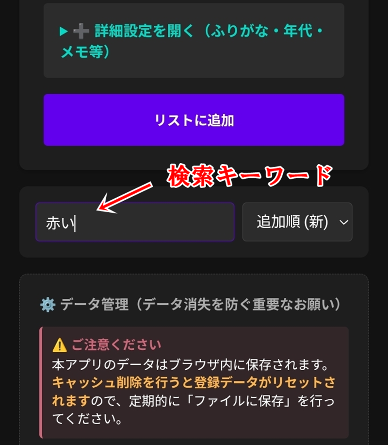
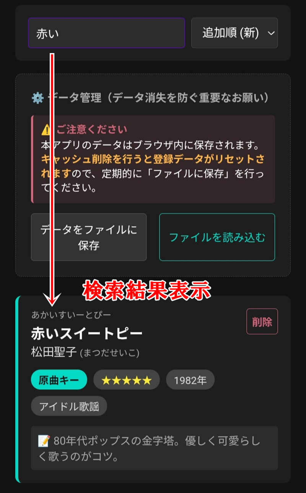
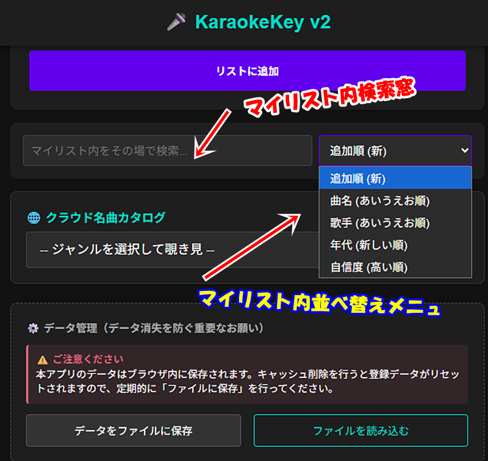
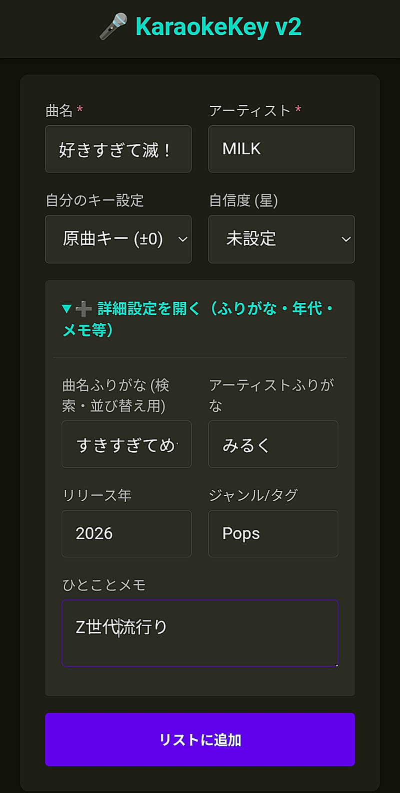
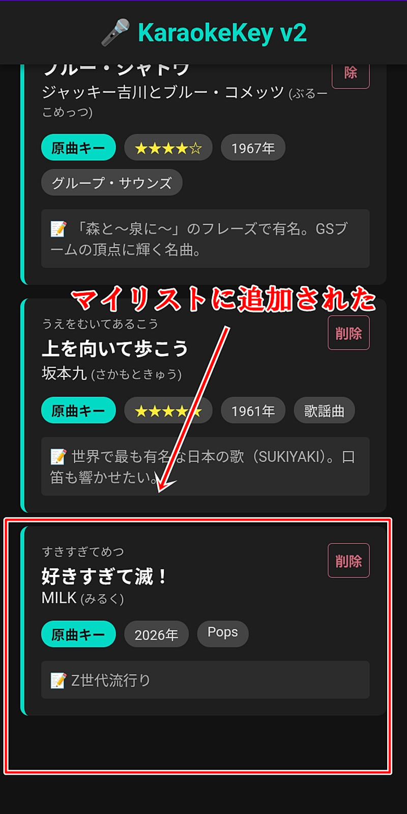
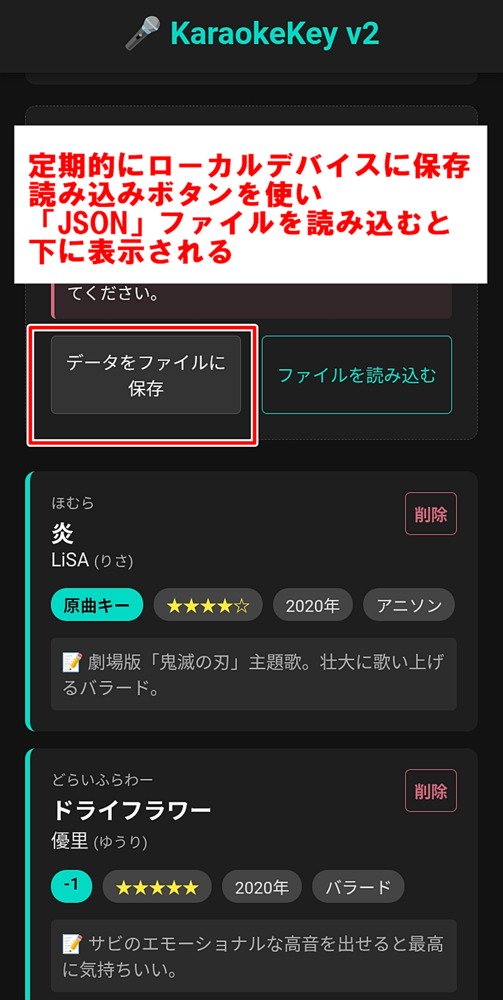

1. 自分の持ち歌（マイリスト）を検索・並び替える
画面真ん中あたりにある「マイリスト内をその場で検索...」という四角い枠を押し、キーボードで文字を入力します。

文字を入れると、検索窓のすぐ真下に緑色の枠で囲まれた「検索結果」がその場でパッと現れます。

検索窓の右側にある下向き矢印のメニューを押すと、曲を「あいうえお順」や「自信度順」に並び替えることができます。検索中であれば、その場で検索結果もパッと並び替わります。

2. 新しい曲を自分のリストに登録する
画面の一番上にある「曲名」と「アーティスト」の枠に、新しく覚えたい曲やいつも歌う曲を入力します。

自分に合うキーと得意度（星の数）を選んだら、紫色の「リストに追加」ボタンを押します。これで一番下のマイリストへ自動で保存されます。

3. データのバックアップ（一番重要！）
スマートフォンの故障やブラウザの掃除で曲が消えてしまうのを防ぐため、ときどき「データをファイルに保存」ボタンを押して、大切なマイリストをスマホ内に保存しておいてください。

【プロ直伝】カラオケが激変する！
音響設定の黄金比とトラブル対処法
カラオケアプリや店舗の機器で「もっと気持ちよく歌いたい」「なぜか上手く声が響かない」というときのための、実践的な音響ガイドです。
1. 歌いやすさ抜群！音量の「黄金比率」
誰でも歌いやすく、聴き映えがする基本のバランスは以下の通りです。数値そのものではなく、この「比率」を意識して設定するのがコツです。
ミュージック ： マイク ： エコー ＝ 10 ： 11〜12 ： 7〜8
- ミュージック（伴奏）： すべての基準となる音量です。
- マイク： 伴奏に声が負けないよう、ミュージックの数値より「ほんの少し高め」に。
- エコー（リバーブ）： かけすぎると音がボヤけるため、マイクの「7〜8割」の控えめにするのが現代のトレンドです。
2. DAM vs JOYSOUND 機種別の調整テクニック
機種ごとの音質の特性に合わせて微調整すると、さらにクオリティが上がります。
- DAM（LIVE DAM AI など）： 音圧が高く重厚な生演奏サウンド。マイクがクリアに響くため、エコーは「いつもより1〜2目盛り下げる」くらいがジャストフィットします。
- JOYSOUND（X1・MAX GO など）： 中高音がすっきりした軽いサウンド。マイク音量を「気持ち高め」に、エコーを「少し多め」にすると、声を張り上げずに気持ちよく歌えます。
3. 音がおかしいときの「爆速リセット＆再設定」5分ステップ
「設定数値は高いのに声を拾わない」「急にハウリングしてエコーが切れた」という時は、機械の安全装置（ハウリング防止機能）がバグを起こしている可能性大。一度すべてを「0」にして、以下の順番で一方向にだけ上げていくと、迷わず一発で最高の音響が作れます。
- すべてを「0」にする： ミュージック、マイク、エコーを一度すべて0にします（耳と機械のエラーをリセット）。
- ミュージックだけを上げる： 伴奏を「胸に心地よく響く音量」まで上げ、そこで固定します。
- マイクだけを上げる： エコーは0のまま声を出し、伴奏の少し手前から自分の声がハッキリ聞こえる位置で固定します。
- 最後にエコーを足す： 歌いながら、声の語尾がスーッと綺麗に消える絶妙なところまで少しずつ上げます。
⚜️ 設定調整が上手く行かない時は、フロントにお願いしましょう。